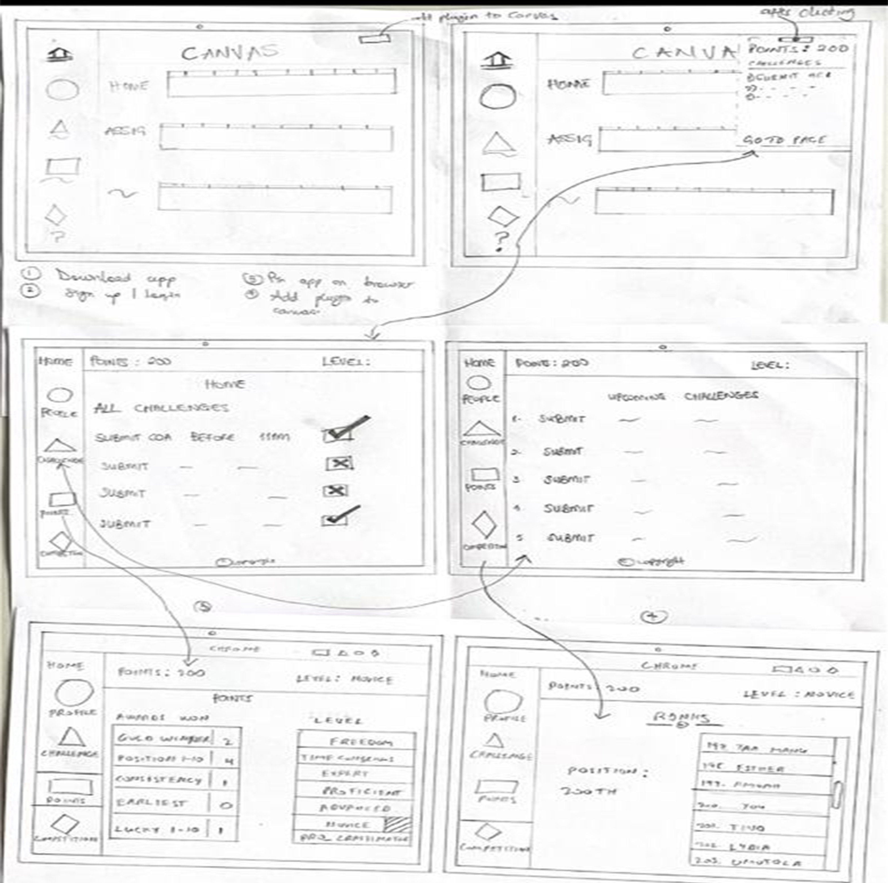
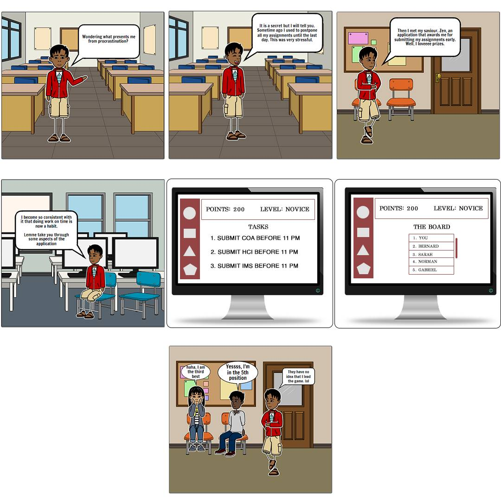
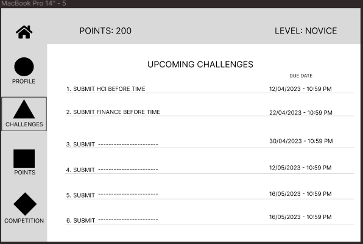
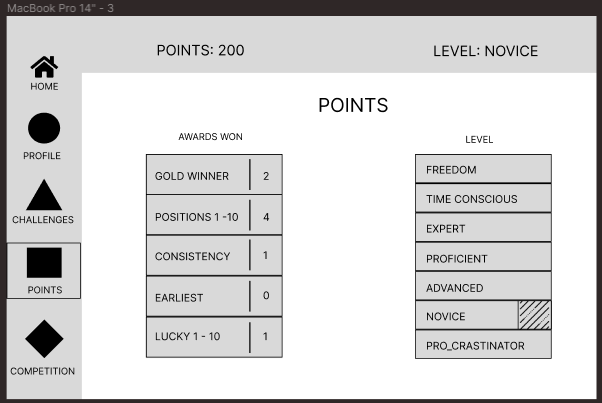
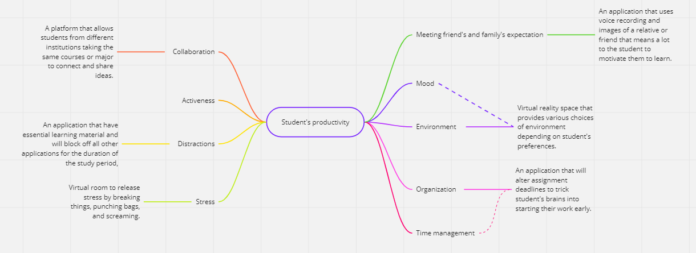
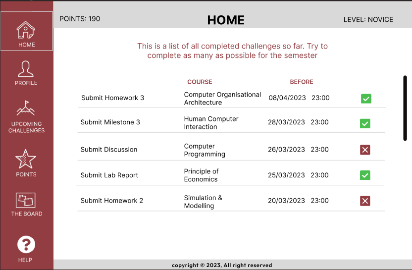
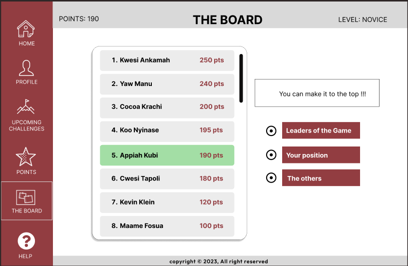
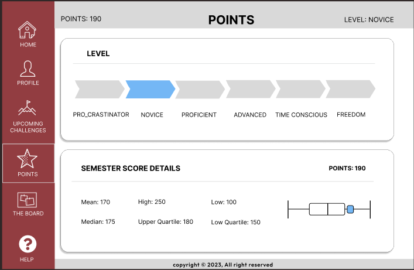
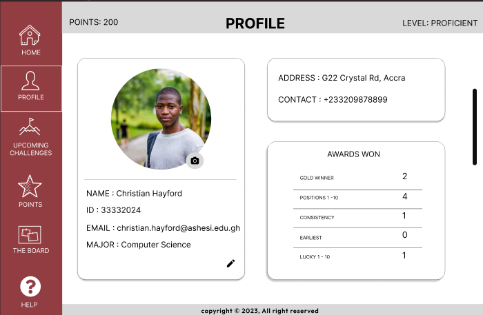
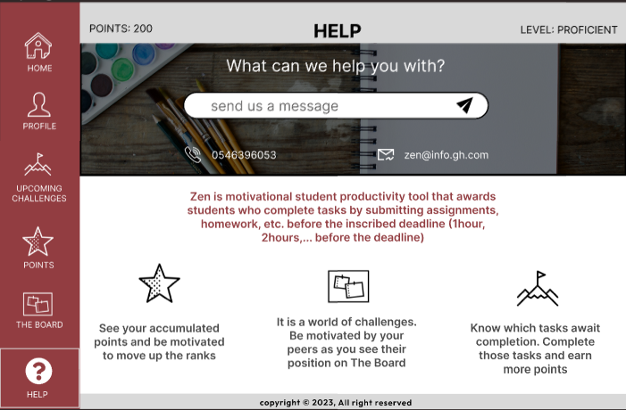

About
PROJECT OVERVIEW
Group two is tasked with the responsibility of designing a digital platform that helps students increase their productivity. The team's design process started with a background research on the internet about similar projects and existing solutions. From there, we undertook primary research to have an in depth overview of the issue at hand. We have been able to generate relevant insights that can guide us in satisfying the needs of students and making their study lives more productive without any side effects.
PROBLEM STATEMENT
-
University students presently have complete independence and autonomy over their learning process, which has made increasing student productivity a significant problem. While some students have the internal drive to study diligently, others may spend the majority of their days engaged in other activities with little time set aside for learning.
-
Students nowadays are being distracted and devoured by a variety of online activities, including social networking, text messaging, and recreational platforms, all of which take time away from their studies as a result of the quick adoption of technology.
“Low productivity among students in tertiary institutions is a pervasive issue that hinders their academic success and future career prospects.”
Process
-
Contextual Inquiry
Description
Contextual Inquiry
Research The tertiary institutions that were included in this study consists of students from Ashesi University, Central University, Academic City and University of Ghana. Data gathering methods used for this research study involved Face to face interviews which consisted of 35 students, Online surveys comprising 15 students and Observations consisting of 30 students. Our team proposed a set of close-ended questions in the online survey that seeks to find the best solution to the need for more productivity among students in tertiary institutions in Accra. The participants' responses were used to inform future initiatives aimed at improving students' productivity and success.
Some of the questions are as follows:
1. Can you describe your typical study routine ?
2. Can you provide any examples of times when you were particularly productive?
3. What contributed to that level of productivity?
4. How do you stay organized?
5. How do you manage your time effectively?
6. What makes you feel relaxed when you are stressed?
.png)
RESPONSES
Responses collected from the research were unpacked and organized with the help of the miro application. Figure 1 in the appendix depicts some of the data collected in the research. Employing affinity diagram, responses were segmented into the user attributes, surprises, needs and insights.
DATA ANALYSIS By inputting the data into our digital whiteboard, we were able to extract qualitative and quantitative responses. Quantitative data, such as the participant age, with the average being around 25 years old were among those identified. During our qualitative analysis, we observed repeated patterns and themes in the responses.
Below are some of the themes that were repeated over and over:
80% reported that social media is their biggest distraction
70% Listen to music while studying to stay focus
72% Attempted to use a to-do list or a timetable to manage their time
80% take breaks to engage in other things before returning to their studies
To summarize the information ascertained from the research, we found it relevant to employ user personas. We arrived at two user personas which helps us to segment the students involved in the research. -
Personas
Description
PERSONAS : Fictitious characters that are created to represent the different user types within a targeted demographic that might use a site or product. Personas are given characteristics and are assumed to be in particular environments based on known users' requirements so that these elements can be taken into consideration when creating scenarios for conceptualizing a site.

RITA OWUSU :3rd Year
CS Major : Introvert
20, Ashesi UniversityPERSONA ONE: RITA OWUSU
-
BIO: Rita is a hardworking and dedicated student who loves to study inside her bedroom. She enjoys the comfort and quietness of her own space and finds it to be the most productive environment for her studies.
-
PERSONALITY - calm - organized - creative - result-oriented
-
FRUSTRATION: she can easily get distracted by social media
struggles to prioritize tasks
struggle with staying focused for extended periods of time -
Learn techniques for staying focused
-Improve her time managment skills
-Achieve better grades
-To be productive while studying inside her bedroom
ADAM NGOLIBA :2nd Year
BA Major : Extrovert
23, Legon UniversityPERSONA ONE: ADAM NGOLIBA
-
BIO: Adam is a lively person who is known for his confidence. He usually studies in the classroom and library and sometimes in the open spaces. He is part of the football and the karate team and quite overwhelmed with activities
-
PERSONALITY likes to talk confident jovial creative
-
FRUSTRATION: -procrastinates -wastes time talking -burns out early -difficulty in managing his timee
-
He needs an interesting and effective solution that will help him manage his schedules and accomplish all tasks on time
-
-
Lo-Fi Prototype
Lo-Fi Prototype : A first simple form from which varieties arise or imitations are made.
Process
Lo-Fi PROTOTYPE
Concept
Storyboards
.png)
Wireframe
.png)
Wireframe
Wireframe four
Wireframe
ScenarioDescription
Scenario
IDEATION PROCESS After organizing and analyzing the affinity map, based on the needs, insights and POV of our target users, we came up with a number of interesting ideas that could potentially solve the problem. Our ideation process was to basically look at the organized needs and suggest possible solutions based on what we think could help and the available solutions that could be improved. The needs were segmented into collaboration, activeness, distractions, stress, meeting friends' and family's expectations, mood, environment, organization and time management. We spent about an hour giving our views on the suggested solution and finally selected one solution for each of the segmented needs. The mind map/spider diagram below illustrates the above explanation.
REQUIREMENTS
REQUIREMENTS After identifying the solution we are proposing, we also did some ideation to come up with functional and non-functional requirements that the app should meet in order to effectively help students meet their intended goals when it comes to productivity.
FUNCTIONAL REQUIREMENTS 1. Study Planner: The app should allow students to create a personalized study plan, schedule study sessions, set reminders for deadlines, and track their progress.
2. Time Management: The app should include a feature that helps students manage their time effectively by breaking down their study schedule into manageable blocks of time and setting reminders to take breaks.
3. Collaboration: The app should provide features that allow students to collaborate with classmates, form study groups, share notes, and work on group projects.
4. Conducive Study Environment: The app should provide numerous virtual study environment setups imitating existing outdoors and indoors environments that help students create a conducive study space for them to be effective and productive.
5. Block Distractions: The virtual space should include a feature that blocks distracting websites and apps during study sessions and rewards students for completing tasks on time. In addition to the functional requirements, there are non-functional requirements to ensure the quality of our virtual application.
NON FUNCTIONAL REQUIREMENTS
1. User-friendly interface: The app should have an intuitive and user-friendly interface that is easy to navigate and use, with clear instructions and feedback to ensure that students can use the app effectively.
2. Performance: The app should be fast and responsive, with minimal lag time, to ensure a smooth user experience.
3. Reliability: The app should be reliable and available 24/7, with minimal downtime or outages, to ensure that students can access it whenever they need to, especially since they rely on it for their daily activities.
4. Compatibility: The app should be compatible with a wide range of devices and operating systems, including desktop and mobile platforms.
5. Accessibility: The app should be accessible to users with disabilities, with features such as screen readers, voice commands, and high-contrast modes.
6. More than one user at a time: With the collaboration part being very important to our solution, the app should be able to support more than one user at a time.
Hi-Fi PrototypeHi-Fi Prototype
An original, full-scale, and usually working model of a new product or new version of an existing product.
Hi-Fi PROTOTYPE

Check our Solution
PROPOSED SOLUTION
From the suggested solutions, we have decided to work with a system named “Zen”. This is a virtual reality space that provides various choices of environment depending on students' preferences. Zen aims to enhance student productivity by providing a multifaceted approach that helps students to be focused, effective, well organized and motivated, collaborate with peers in the same or different locations, access educational resources, and access a conducive and fan study environment. The virtual reality space would transport students who want to focus on their academic work into a different dimension which is favorable, peaceful and matches their study area preference. This overcomes the occurrence of visual and auditory distractions. In addition, it would also have features such as a collaborative panel, study progress tracker, and academic tools, including library materials, to help students stay organized and focused. It also makes learning feels more practical and applicable with the imposition of a real experience. To prevent complete detachment from reality, Zen will alert the user of any danger around the person.
PROJECT TIMELINE
Our Hardworking Team
Pamela Niyongere
Backend Developer & ResearchEdwita Mc-Addy
Research & Communications and Write-upReynolds Okyere Boakye
Frontend Developer & BackendNazik Heymann
Research & Communications and Write-up